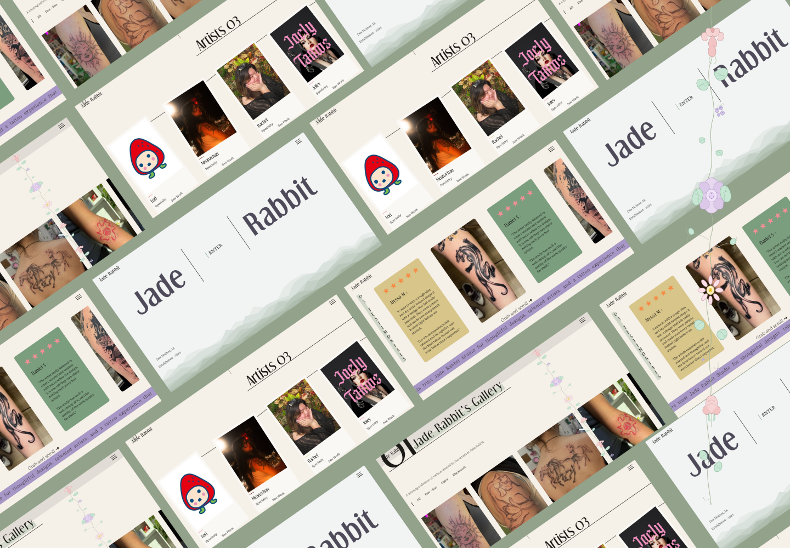
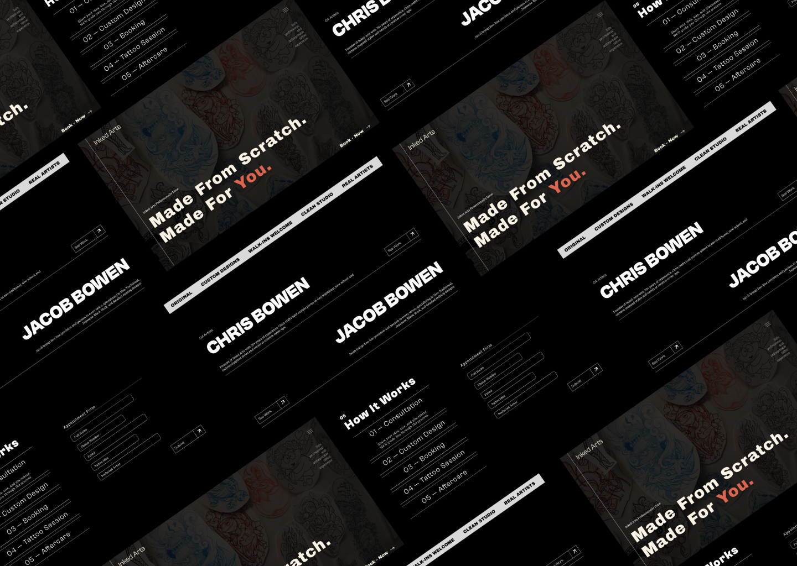
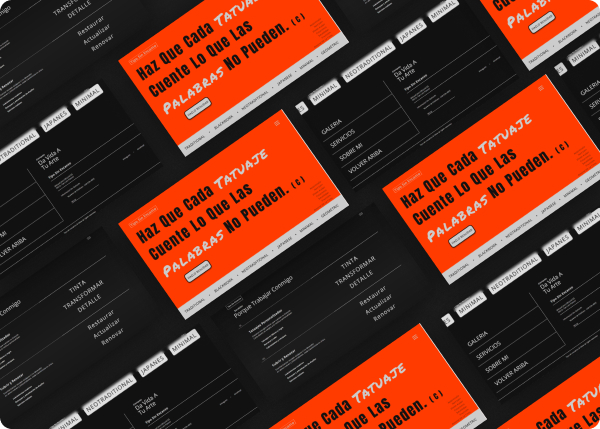

Where ART. Meets THE WEB.
//:01 Web Designer for Artists, Studios & Creative Brands
Scroll →
● Available for Projects
//:02 About-me
HELLO
Im Axel Martinez
CreativeDesigner
I’m a designer fueled by curiosity and a love for details, blending creativity with purpose in every pixel I touch. I craft experiences that don’t just look good—they feel intuitive, meaningful, and human. From bold UI layouts to seamless UX flows, I thrive on turning ideas into interfaces that spark connection and delight. Every project is a chance to push boundaries, experiment, and tell a story through design.
//:03 Work
Some Of My Work
Horimu Ink Tattoo Studio
001
 Click Image to see Website
Click Image to see Website
Overview
I designed and developed Horimu Ink Studio — a modern, immersive website concept for a tattoo studio that blends traditional tattoo artistry with a more refined, contemporary digital presence. The goal was to move away from the typical “dark and generic” tattoo studio websites and instead create something that feels intentional, atmospheric, and brand-driven, reflecting both the skill of the artists and the identity of the studio itself.
The Problem
Most tattoo studio websites fall into the same visual pattern — heavy black backgrounds, aggressive typography, and repetitive layouts that make it difficult for studios to stand out. While this aesthetic works for conveying intensity, it often fails to communicate individuality or highlight the artistic range of the studio. Horimu Ink Studio needed a digital identity that elevated the brand beyond this standard, while still respecting the bold, expressive nature of tattoo culture.
The Solution
- Atmospheric Dark Direction: Instead of relying on flat black backgrounds, the design introduces layered dark tones and subtle gradients, creating depth and a more cinematic, immersive feel that sets the studio apart from typical tattoo websites.
- Controlled Green Accents: Inspired by the studio’s physical branding colors (#55A34D and #1D4229), green is used sparingly as a visual accent rather than a dominant background — acting as a “glow” or ink-like energy that gives the site a distinct identity without overwhelming the composition.
- Editorial Layout Structure: Large typographic hierarchy and spacious sections guide the user experience, allowing each artist and piece of work to breathe instead of feeling compressed into a standard grid-based portfolio layout.
- Hero-Focused Experience: The landing section is designed to immediately establish mood and brand presence, using contrast, depth, and subtle motion to pull users into the studio’s visual world before they even scroll.
- Modern Minimal Navigation: Navigation is kept clean and unobtrusive, prioritizing the artwork and artists over UI clutter, ensuring the experience feels more like a curated portfolio than a typical business site.
Outcome
Horimu Ink Studio establishes a stronger, more recognizable digital identity in a space where many tattoo websites feel visually identical. By combining deep atmospheric blacks with restrained green accents and an editorial layout approach, the site positions the studio as both professional and artistically driven. It elevates the perception of the brand, making it feel less like a standard service website and more like a curated creative space — one that reflects the skill, style, and intention behind the work itself.
Jade Rabbit Studio
002

Click Image to see WebsiteOverview
I designed and developed Jade Rabbit — a minimal, editorial concept website for a tattoo studio that trades the dark, gritty aesthetic typical of the industry for something warmer and more refined. The goal was to build a site that felt curated and intentional, presenting tattooing as fine art while still feeling approachable and human.
The Problem
Most tattoo studio websites lean into the same visual language — dark backgrounds, heavy typography, aggressive energy. While that works for some studios, it leaves a gap for artists whose work is delicate, illustrative, or fine-line. Jade Rabbit needed a digital presence that reflected a different kind of studio — one where the art is soft, considered, and gallery-worthy, and the experience of booking feels just as intentional as the tattoo itself.
The Solution
- Editorial Art Direction: A deliberate departure from industry norms — earthy creams, sage greens, and warm neutrals replace the typical black canvas, giving the site a calm, gallery-like atmosphere.
- Numbered Section Structure: Large typographic section markers (01, 02, 03) create a quiet visual rhythm that guides users through the page without relying on traditional navigation cues.
- Scattered, Organic Layout: Images are placed at varied sizes and positions rather than locked into a rigid grid — mimicking the feeling of flipping through an artist's portfolio book.
- Playful Restraint: Small moments of personality — card-like elements, subtle textures, and mixed type treatments — add warmth and character without disrupting the overall elegance of the layout.
- Mobile-First, Responsive Design: Built with CSS Grid and Flexbox to preserve the editorial feel across all screen sizes without losing the intentional looseness of the layout.
Outcome
Jade Rabbit proves that a tattoo studio website doesn't have to look like one. By committing to a minimal, playful, and elegant direction, the site carves out its own visual identity in a crowded space — attracting the kind of clients who already appreciate considered design before they ever see the artwork. It stands as a strong contrast piece alongside Inked Art, demonstrating range in both design thinking and creative direction.
Inked Art - Concept
003

Click Image to see WebsiteOverView
I designed and developed Inked Art — a visually striking, modern, mobile-first concept website for a tattoo studio inspired by the real Inked Arts brand. The goal was to represent the creative energy of the studio, highlight artwork, and communicate a clear user journey from discovery to booking.
The Problem
The original Inked Arts site was primarily a static business page with limited structure and layout. While it shared basic contact info, testimonials, and a few images, it lacked a professional, portfolio-focused presentation of artwork, clear visual hierarchy, or a streamlined narrative that guides potential clients toward taking action.
The Solution
- Hero Section: Bold imagery and typography to instantly establish atmosphere and brand personality.
- Work Gallery: A clean, grid-based portfolio that showcases diverse tattoo styles and pieces — making the art the focal point.
- Mobile-First, Responsive Design: Built using CSS Grid and Flexbox to ensure layout integrity across devices — from phones to desktops.
- Clear Content Flow:Strategically structured sections that lead users from “Who we are” to “What we do” to “Book now,” improving clarity and reducing friction.
- Subtle InteractionsSoft hover effects and transition animations to enhance the UX without taking attention away from the artwork.
Outcome
The concept site successfully elevates the brand presentation, keeps artwork front and center, and feels far more intentional and polished than the original site’s layout and structure. It serves as a scalable foundation that can grow into full artist pages, integrated booking, detailed testimonials, and deeper portfolio filters — all aligned with how tattoo clients evaluate studios before booking
Tattoo Studio Based In Mexico
004

Click Image to see WebsiteOverView
I designed a modern, mobile-first website for a local tattoo shop. The goal was to showcase the artists’ work, reflect the shop’s personality, and make it easy for clients to book.
The Problem
The shop relied on social media to attract clients, which didn’t allow for a professional, organized presentation of work.
The Solution
- Hero Section: strong imagery to establish brand
- work Gallery: clean, grid-based layout highlighting tattoos
- Mobile-first, responsive design using CSS Grid and Flexbox
- Subtle interactions to enhance experience without distraction
Outcome
The site clearly represents the brand, keeps the work front and center, and serves as a scalable foundation for future features like artist pages and booking.
//:004 Services
What I Build For You
Specializing in tattoo studios, artists, and creative brands that want a site as good as their work.
Web Design
Most studio sites look like everyone else's. Yours won't. I design and build custom websites that reflect your actual personality — bold, intentional, and built to convert visitors into booked clients.
Starting at $400 · Final pricing based on scope
UX & UI Design
A site that looks good but confuses people is just expensive decoration. I design flows that feel effortless where every click, scroll, and interaction moves your client closer to booking.
Interaction & Motion
The difference between a good site and one people screenshot and send to their friends is movement. I build animations that feel intentional, not decorative the kind that make people say "how did they do that."
Responsive Web Design
Your clients are booking from their phones at midnight. I build sites that look and work exactly right on every screen no pinching, no broken layouts, no excuses.
Visual Storytelling
Your art has a story. Your site should tell it. I build visual narratives that take someone from "just browsing" to "I need to book this studio" through layout, hierarchy, and design that actually communicates.